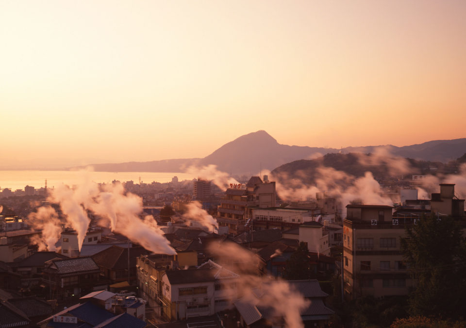
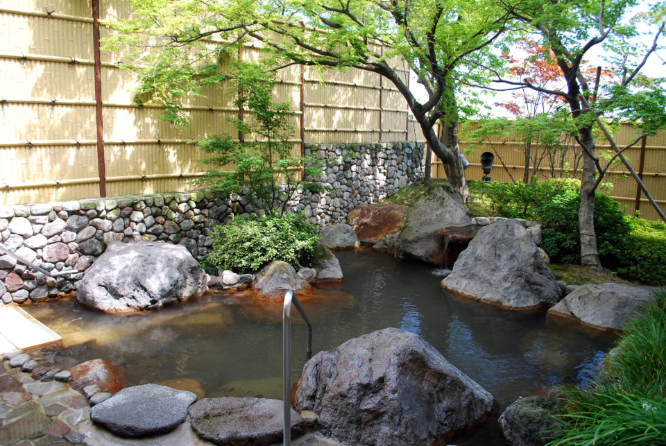
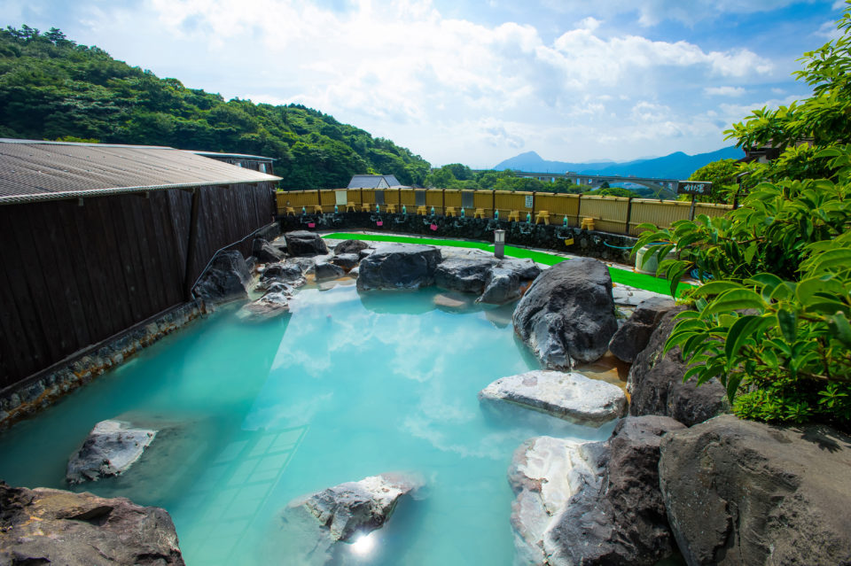
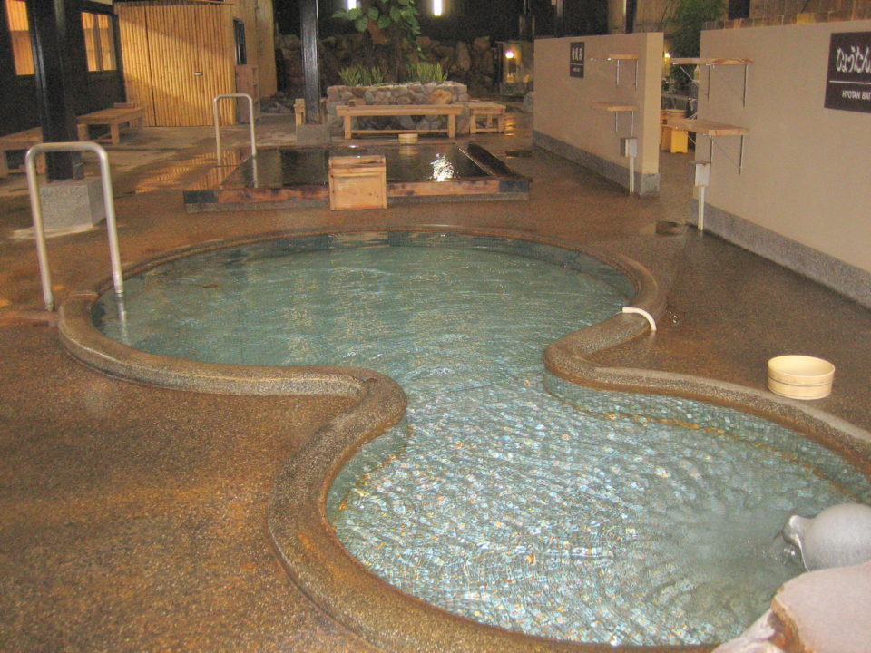
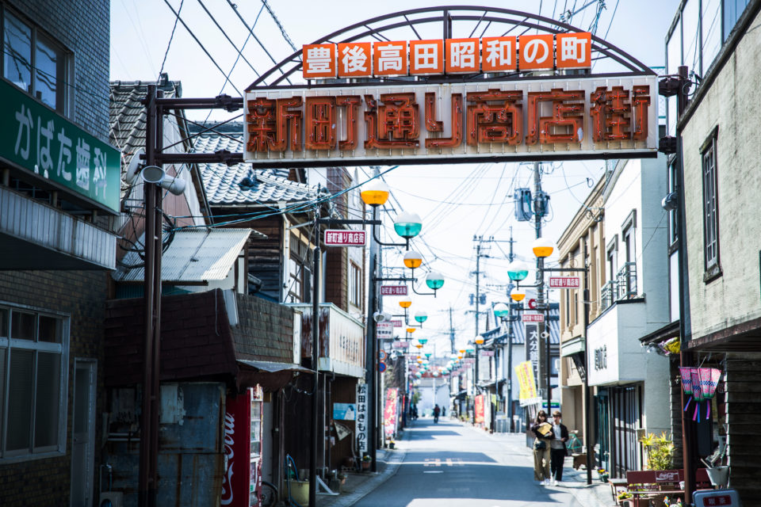
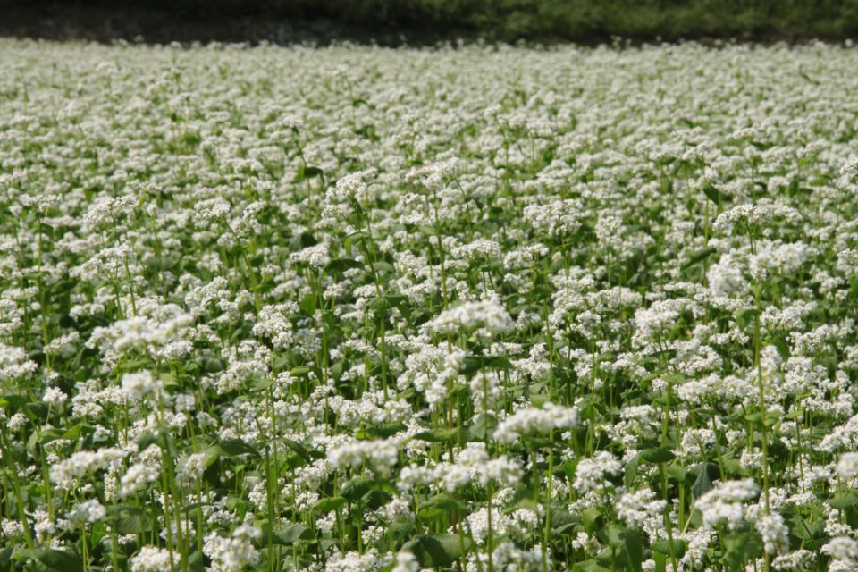
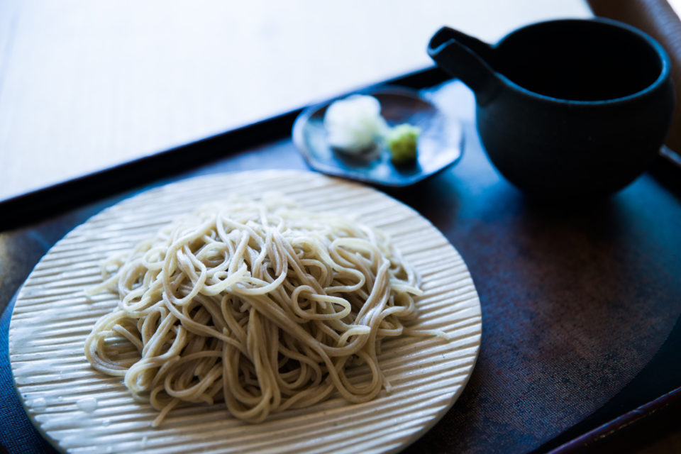
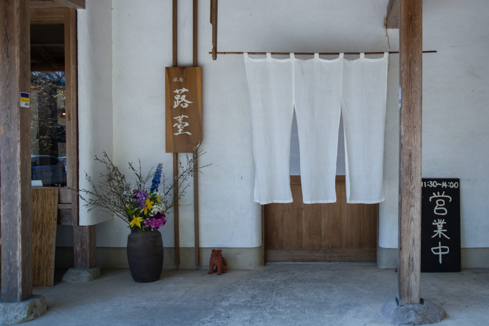
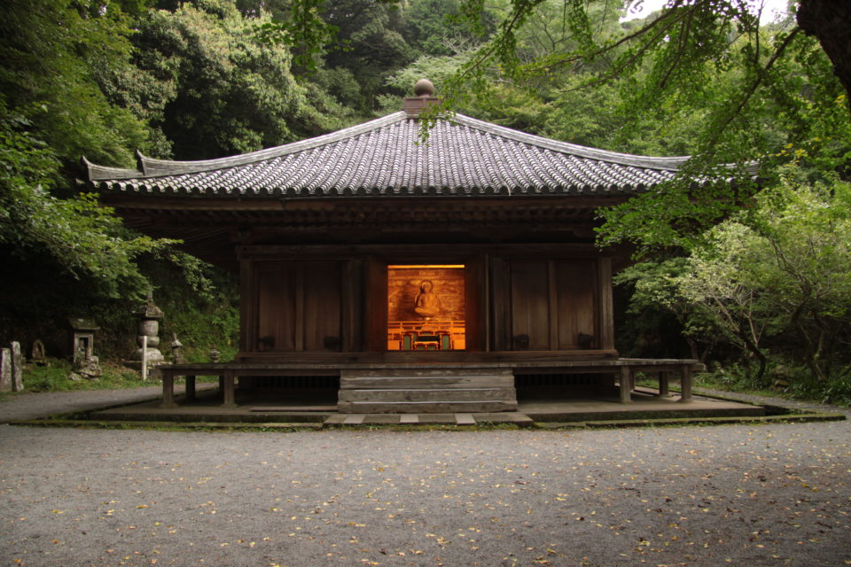

Префектура Оита · Беппу и Бунготакада · маршрут
Два дня в Оите: серные ванны Мёбана, мягкая вода Каннавы и древний храм Фукидзи

Префектура Оита называет себя «префектурой онсэнов»: по числу источников и объёму горячей воды она первая в Японии. Мы провели здесь короткие выходные: день на водах Беппу и день на полуострове Кунисаки, где к гречневой лапше прилагается тысячелетняя история.
День первый
Беппу: два онсэна по рецепту
Оита обязана своим богатством вулканам: подземное тепло дало префектуре больше горячих источников, чем любой другой в стране. Весной 2018 года здесь проходил всемирный саммит курортов с горячими источниками, куда съехались руководители курортов и учёные из разных стран.
Первым делом мы отправились в Беппу, город, который весь стоит на горячей воде. В нём восемь крупных курортных районов, вместе их называют Беппу-хатто, и вода в каждом своя. Отличаются и сами купальни: открытые ванны под небом, паровые бани, ванны с горячим песком.

Из десяти типов вод, которые различают в Японии, в Беппу встречаются шесть. Поэтому здесь в моде «функциональное купание»: несколько разных вод по очереди, чтобы их действие усиливало друг друга. Мы выбрали проверенную пару. Сначала идёт сильнокислая серная вода Мёбана, которая снимает с кожи жир и загрязнения. Потом идёт слабокислая хлоридная вода Каннавы, мягкая и близкая по составу к самой коже: она увлажняет. В таком порядке, говорят, косметический эффект сильнее всего.
Мёбан: вид на горы и молочная вода

Купальня «Мёбан Ю-но сато» стоит на высоте 350 метров. Из ванны открывается вид на мост Мёбан, гору Цуруми и гору Такасаки. Здесь с периода Эдо добывают «ю-но хана», целебный налёт с горячих источников, и способ его изготовления внесён в список важного нематериального народного культурного наследия Японии.
Вода здесь кислее, чем составы для химического пилинга, так что купание похоже на сеанс у косметолога, устроенный самой природой. Молочно-белая вода мягко обволакивает кожу и прогревает до самых костей. В 2018 году после ванны советовали попробовать местное лакомство: пудинг, приготовленный на одном только пару горячих источников. Открытая ванна для взрослых стоила тогда 600 иен.
«Мёбан Ю-но сато»
- Адрес
- префектура Оита, Беппу, онсэн Мёбан, 6-куми
- Телефон
- +81 977-66-8166
- Часы работы
- открытая ванна и семейные ванны 10:00–21:00, вход до 20:00
- Выходные
- без выходных, в непогоду может быть закрыто
- Цены / Вход
- открытая ванна: взрослые (от средней школы) 600 иен, дети от 4 лет до конца начальной школы 300 иен, до 3 лет бесплатно; семейная ванна: 2 000 или 2 500 иен за домик на час
- Сайт
- yuno-hana.jp
Каннава: Hyotan Onsen

Вторая купальня, Hyotan Onsen, считается главной в районе Каннава. Её открыли в 1922 году, и за сто с лишним лет она получила три звезды в зелёном путеводителе Мишлен, так что сюда едут и из-за границы. Внутри открытые ванны, каменные ванны и ванны из кипариса хиноки, а ещё фирменный горячий водопад, паровая баня, ванна с песком, ванна для ходьбы и семейные ванны. Сюда ходят и местные жители, и туристы из Японии и других стран.
Слабокислая хлоридная вода в Японии редкость. Метакремниевой кислоты, которая удерживает влагу в коже, в ней в девять раз больше нормы, и это один из лучших показателей в стране. Слабая кислотность, немного соли и метакремниевая кислота вместе работают как природный лосьон: кожа после купания гладкая и увлажнённая. В 2018 году вход в большую купальню стоил 750 иен для взрослых, а после 18:00 560 иен.
Hyotan Onsen
- Адрес
- префектура Оита, Беппу, Каннава, 159-2
- Телефон
- +81 977-66-0527
- Часы работы
- 9:00–1:00
- Выходные
- без выходных, в апреле, июле и декабре бывают санитарные дни
- Цены / Вход
- большая купальня: взрослые (от средней школы) 750 иен, школьники 320 иен, дети 4–6 лет 210 иен, до 3 лет бесплатно; после 18:00: 560, 160 и 110 иен; семейная ванна: 2 150 иен за час (до трёх взрослых)
- Сайт
- hyotan-onsen.com
Между двумя купальнями время теряется совсем, и к вечеру мы едва успели к заселению в гостиницу.
День второй
Бунготакада: улица прошлого века
Через час на машине от Беппу мы были в Бунготакаде, городе на полуострове Кунисаки. В 2018 году здесь снимали фильм «Сакамити но Апорон».

Центральные торговые улицы Бунготакады с периода Эдо и до 1950-х годов были самыми оживлёнными на всём полуострове. Потом, как и множество торговых улиц по всей Японии, они начали пустеть. В 2001 году горожане решили вернуть им дух второй половины 1950-х, когда торговля здесь кипела, и назвали проект «Сёва-но мати», «Город эпохи Сёва». Начинали всего с семи магазинов, получивших знак проекта, к 2018 году их стало 44, а улицы посещали около 400 000 человек в год.
Гречка
Лапша монахов
На полуострове Кунисаки в периоды Нара и Хэйан расцвела культура «Рокуго мандзан». Она соединила почитание гор, буддизм школы Тэндай и веру в бога Хатимана, главное святилище которого Уса-дзингу. В 2018 году отмечали 1300 лет с основания здешних горных храмов.
Монахи ценили гречку как запас на крайний случай: гречневую муку достаточно развести водой, и еда готова. При этом к началу 2000-х в Бунготакаде гречку почти не сеяли. Её начали выращивать заново в 2003 году, и за полтора десятка лет город вышел в лидеры западной Японии по площади посевов. Тёплый климат позволяет снимать два урожая, весной и осенью, а по весенней гречке Бунготакада в 2018 году была первой в стране.

Лапшу из этой гречки подают в заведениях со знаком «Бунготакада тэути соба», «соба ручной работы Бунготакады». В 2018 году таких в городе было двенадцать. Чтобы получить знак, повар должен закончить курсы мастеров соба или показать уровень в местной школе «Бунготакада соба додзё». Правил три: только гречка Бунготакады, только ручная раскатка и «три свежести», то есть мука только что смолота, тесто только что раскатано, лапша только что сварена.

Одним из таких заведений был ресторан при гостинице «Рёан Фукиното» по соседству с храмом Фукидзи. Гостиница открылась в 2004 году, с 2006 года в её зале подавали местную соба, а мука для неё мололась на каменных жерновах прямо на месте. С лета 2018 года еду здесь готовят только для постояльцев, так что попробовать эту лапшу можно, лишь остановившись на ночь.

«Рёан Фукиното»
- Адрес
- префектура Оита, Бунготакада, Тасибуки, 2365
- Телефон
- +81 978-26-2668
Храм
Фукидзи: самая старая деревянная постройка Кюсю
От гостиницы до храма Фукидзи несколько шагов. Его основали в период Хэйан как семейный храм верховных жрецов святилища Уса-дзингу. Главная ценность храма это зал Амиды, который называют Фукидзи-одо. Это самое старое из сохранившихся деревянных зданий Кюсю и национальное сокровище Японии. Его ставят в один ряд с павильоном Феникса храма Бёдоин в Удзи и Золотым павильоном храма Тюсондзи в Хираидзуми: вместе это три знаменитых зала Амиды.

Мы приехали весной, когда вокруг уже зеленела молодая листва, и долго бродили по территории, разглядывая старое здание. Говорят, осенью клёны окрашивают весь двор в красный цвет, так что сюда хочется вернуться ещё и в сезон листопада. А по дороге стоит помнить, что Кунисаки называют сокровищницей каменной резьбы: говорят, здесь находится около 80 процентов всех каменных стражей-нио Японии.
Храм Фукидзи
- Адрес
- префектура Оита, Бунготакада, Тасибуки, 2395
- Телефон
- +81 978-26-3189
- Часы работы
- 8:30–16:30, в непогоду зал могут закрыть
- Цены / Вход
- взрослые (от старшей школы) 300 иен, школьники 150 иен
Выходные вышли короткими, но в них уместились лучшие в Японии горячие источники, местная еда и храмы, которые полуостров хранит больше тысячи лет. И это лишь малая часть того, что есть в Оите.
Фото: Хиромаса Оцука.